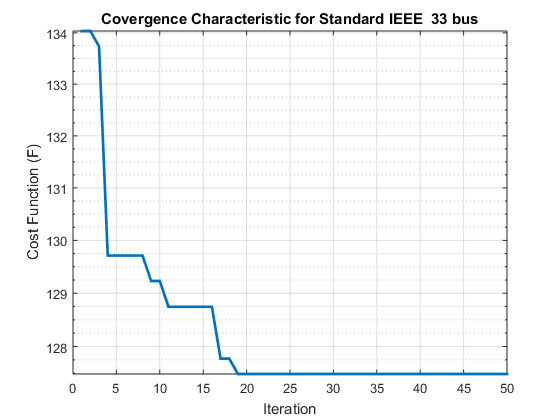
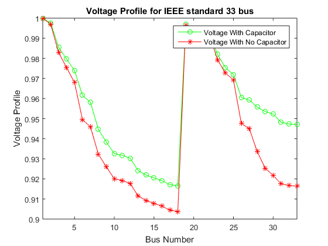
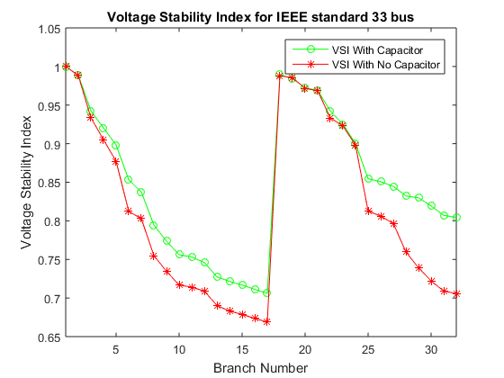
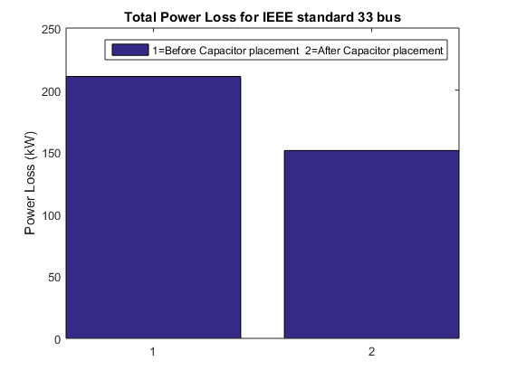
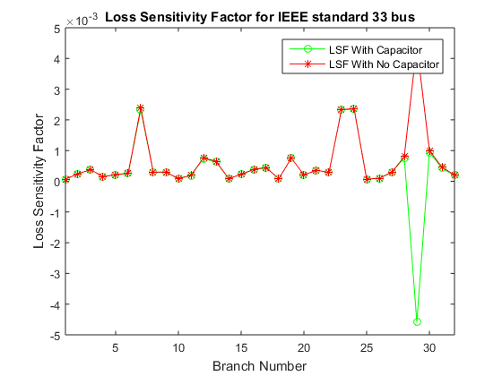
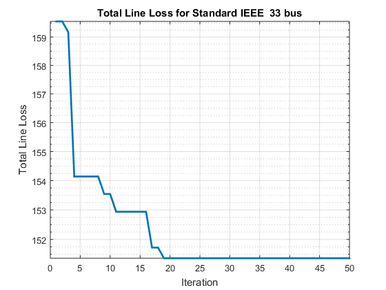
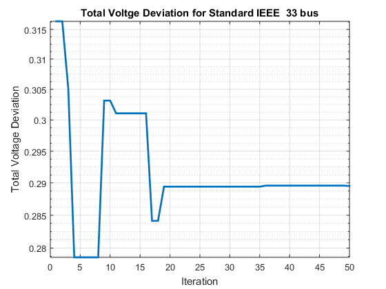

Contents
- User Input
- Initializing the Cuckoo Algorithm
- Geting Current best Solution 1
- Starting the iteration
- Generate new solutions (but keep the current best)
- Application of simple constraints 1
- end of get_cuckoos
- Geting Current best Solution 2
- function new_nest=empty_nests(nest,Lb,Ub,pa) ;
- New solution by biased/selective random walks
- Geting Current best Solution 3
- Result Display
clc;clear;close all;
tic
User Input
DistLoadFlowSolution=powerflow; % Function Input User.Function='ObjfuncPoweRnLSF'; User.NumbVar=4; % User.Lb=[-20,-10,-5,-1]; % User.Ub=[20,10,5,1]; Standard = true; Bus_Data = 'Enugu '; bn=33; User.MaxIter=50; User.Lb=[150 1]; User.Ub=[1500 bn]; % User.Lb=[0 0 0]; % User.Ub=[2.0 2 2]; % Cuckoo Input User.NumNest=25; %Levy Flight Input User.beta=3/2; pa=0.25;
Initializing the Cuckoo Algorithm
SampleNest.CPnLoc=[]; SampleNest.PLosVolt=[]; Nest=repmat(SampleNest,User.NumNest,1); for i=1:User.NumNest % Nest(i).Position=round(User.Lb+(User.Ub-User.Lb).*rand(size(User.Lb))); Nest(i).CPnLoc=round(User.Lb+(User.Ub-User.Lb).*rand(size(User.Lb))); DistLoadFlowCPSolution=powerflowCP(Nest(i).CPnLoc(1,1),Nest(i).CPnLoc(1,2)); Nest(i).CostPLos=[DistLoadFlowCPSolution.PtLosskW]; Nest(i).CostPbrLos=[DistLoadFlowCPSolution.Pbrloss]; Nest(i).CostVact=[DistLoadFlowCPSolution.Vactual]; Nest(i).CostVolt=[DistLoadFlowCPSolution.VmagPU]; Nest(i).CostVSI=[DistLoadFlowCPSolution.VSI]; Nest(i).CostMinVolt=[DistLoadFlowCPSolution.minVSI]; Nest(i).CostLSF=[DistLoadFlowCPSolution.LSF]; Nest(i).CostVDI=[DistLoadFlowCPSolution.VDI]; Nest(i).CostVDIsum=[DistLoadFlowCPSolution.VDIsum]; Nest(i).CostVangle=[DistLoadFlowCPSolution.Vangle]; Nest(i).CostQtLos=[DistLoadFlowCPSolution.QtLosskVAr]; Nest(i).CostQbrLos=[DistLoadFlowCPSolution.Qbrloss]; Nest(i).CostSLos=[DistLoadFlowCPSolution.SLosskVA]; end
Geting Current best Solution 1
fitness=10^10*ones(User.NumNest,1); % function % [BestNest.Cost,Bestnest,Nest.Position,fitness]=get_best_nest(Nest.Position,Nest.Position,fitness); for j=1:User.NumNest Nest(j).PLosVolt=feval(User.Function,... Nest(j).CostPLos,Nest(j).CostLSF); % Nest(j).PLosVolt=feval(User.Function,... % Nest(j).CostPLos,Nest(j).CostMinVolt,Nest(j).CostQtLos); if Nest(j).PLosVolt<=fitness(j) fitness(j)=Nest(j).PLosVolt; Nest(j).CPnLoc=Nest(j).CPnLoc; end end % Find the current best [BestNest.PLosVolt,K]=min(fitness) ; BestNest.CPnLoc=Nest(K).CPnLoc; BestNest.CostPLos = Nest(K).CostPLos; BestNest.CostPbrLos = Nest(K).CostPbrLos; BestNest.CostVact = Nest(K).CostVact; BestNest.CostVolt = Nest(K).CostVolt; BestNest.CostVSI = Nest(K).CostVSI; BestNest.CostLSF = Nest(K).CostLSF; BestNest.CostVDI = Nest(K).CostVDI; BestNest.CostVDIsum = Nest(K).CostVDIsum; BestNest.CostMinVolt = Nest(K).CostMinVolt; BestNest.CostVangle = Nest(K).CostVangle; BestNest.CostQtLos = Nest(K).CostQtLos; BestNest.CostQbrLos = Nest(K).CostQbrLos; BestNest.CostSLos = Nest(K).CostSLos; %end of get_best_nest New_Nest=Nest; % Just preallocting New_Nest
Starting the iteration
for iter =1:User.MaxIter
Generate new solutions (but keep the current best)
%fuction New_Nest.Postion=get_cuckoos(Nest.Position,Bestnest.Position,User.Lb,User.Ub); % Note arg1 is calling in the number os nest (i.e Nest.Postion=User.NumNest) sigma=(gamma(1+User.beta)*sin(pi*User.beta/2)/(gamma((1+User.beta)/2)*User.beta*2^((User.beta-1)/2)))^(1/User.beta); for j=1:User.NumNest
% implementing Levy Flight for each nest s=Nest(j).CPnLoc; % Levy flights by Mantegna's algorithm u=randn(size(s))*sigma; v=randn(size(s)); step=u./abs(v).^(1/User.beta); stepsize=0.01*step.*(s-BestNest.CPnLoc); s=s+stepsize.*randn(size(s));
Application of simple constraints 1
function s=simplebounds(s,Lb,Ub) Apply the lower bound
ns_tmp=s;
I=ns_tmp<User.Lb;
ns_tmp(I)=User.Lb(I);
% Apply the upper bounds
J=ns_tmp>User.Ub;
ns_tmp(J)=User.Ub(J);
% Update th is new move
s=ns_tmp;
% end of simplebounds
New_Nest(j).CPnLoc=round(s); % Calling simplebounds
New_DistLoadFlowCPSolution=powerflowCP(New_Nest(j).CPnLoc(1,1),New_Nest(j).CPnLoc(1,2));
New_Nest(j).CostPLos=[New_DistLoadFlowCPSolution.PtLosskW];
New_Nest(j).CostPbrLos=[New_DistLoadFlowCPSolution.Pbrloss];
New_Nest(j).CostVact=[New_DistLoadFlowCPSolution.Vactual];
New_Nest(j).CostVolt=[New_DistLoadFlowCPSolution.VmagPU];
New_Nest(j).CostVSI=[New_DistLoadFlowCPSolution.VSI];
New_Nest(j).CostMinVolt=[New_DistLoadFlowCPSolution.minVSI];
New_Nest(j).CostLSF=[New_DistLoadFlowCPSolution.LSF];
New_Nest(j).CostVDI=[New_DistLoadFlowCPSolution.VDI];
New_Nest(j).CostVDIsum=[New_DistLoadFlowCPSolution.VDIsum];
New_Nest(j).CostVangle=[New_DistLoadFlowCPSolution.Vangle];
New_Nest(j).CostQtLos=[New_DistLoadFlowCPSolution.QtLosskVAr];
New_Nest(j).CostQbrLos=[New_DistLoadFlowCPSolution.Qbrloss];
New_Nest(j).CostSLos=[New_DistLoadFlowCPSolution.SLosskVA];
end
end of get_cuckoos
Geting Current best Solution 2
calling get_best_nest again... but using New_Nest.Position as input 2nd arguement
for j=1:User.NumNest % Nest(j).Cost=feval(User.Function,New_Nest(j).Position); Nest(j).PLosVolt=feval(User.Function,... New_Nest(j).CostPLos,New_Nest(j).CostLSF); % Nest(j).PLosVolt=feval(User.Function,... % New_Nest(j).CostPLos,New_Nest(j).CostMinVolt,New_Nest(j).CostQtLos); if Nest(j).PLosVolt<=fitness(j) fitness(j)=Nest(j).PLosVolt; % Nest(j).CPnLoc=New_Nest(j).CPnLoc; Nest(j)=New_Nest(j); end end % Find the current best [~,K]=min(fitness) ; BestNest.CPnLoc=Nest(K).CPnLoc; BestNest.CostPLos = Nest(K).CostPLos; BestNest.CostPbrLos = Nest(K).CostPbrLos; BestNest.CostVact = Nest(K).CostVact; BestNest.CostVolt = Nest(K).CostVolt; BestNest.CostVSI = Nest(K).CostVSI; BestNest.CostMinVolt = Nest(K).CostMinVolt; BestNest.CostLSF = Nest(K).CostLSF; BestNest.CostVDI = Nest(K).CostVDI; BestNest.CostVDIsum = Nest(K).CostVDIsum; BestNest.CostVangle = Nest(K).CostVangle; BestNest.CostQtLos = Nest(K).CostQtLos; BestNest.CostQbrLos = Nest(K).CostQbrLos; BestNest.CostSLos = Nest(K).CostSLos; % End of calling get_best_nest again... but using new_nest as input arguement
function new_nest=empty_nests(nest,Lb,Ub,pa) ;
%.............. Discovery and randomization............... %............ A fraction of worse nests are discovered with a probability pa.............. % Discovered or not -- a status vector % Converting structure field position to array matrix of NumNest by % NumbVar arrayNestCPnLoc=cell2mat({Nest.CPnLoc}.'); K=rand(size(arrayNestCPnLoc))>pa; % In the real world, if a cuckoo's egg is very similar to a host's eggs, then % this cuckoo's egg is less likely to be discovered, thus the fitness should % be related to the difference in solutions. Therefore, it is a good idea % to do a random walk in a biased way with some random step sizes.
New solution by biased/selective random walks
NumbaofNest=size(arrayNestCPnLoc,1); %NumbaofNest = User.NumNest nestn1=arrayNestCPnLoc(randperm(NumbaofNest),:); nestn2=arrayNestCPnLoc(randperm(NumbaofNest),:); Nstepsize=rand*(nestn1-nestn2); new_arrayNestCPnLoc=arrayNestCPnLoc+Nstepsize.*K; for j=1:size(new_arrayNestCPnLoc,1) Ns=new_arrayNestCPnLoc(j,:); %Application of simple constraints 2 % Apply the lower bound Nns_tmp=Ns; nI=Nns_tmp<User.Lb; Nns_tmp(nI)=User.Lb(nI); % Apply the upper bounds nJ=Nns_tmp>User.Ub; Nns_tmp(nJ)=User.Ub(nJ); % Update this new move Ns=Nns_tmp; % end of simplebounds New_Nest(j).CPnLoc=round(Ns); New_DistLoadFlowCPSolution=powerflowCP(New_Nest(j).CPnLoc(1,1),New_Nest(j).CPnLoc(1,2)); New_Nest(j).CostPLos=[New_DistLoadFlowCPSolution.PtLosskW]; New_Nest(j).CostPbrLos=[New_DistLoadFlowCPSolution.Pbrloss]; New_Nest(j).CostVact=[New_DistLoadFlowCPSolution.Vactual]; New_Nest(j).CostVolt=[New_DistLoadFlowCPSolution.VmagPU]; New_Nest(j).CostVSI=[New_DistLoadFlowCPSolution.VSI]; New_Nest(j).CostMinVolt=[New_DistLoadFlowCPSolution.minVSI]; New_Nest(j).CostLSF=[New_DistLoadFlowCPSolution.LSF]; New_Nest(j).CostVDI=[New_DistLoadFlowCPSolution.VDI]; New_Nest(j).CostVDIsum=[New_DistLoadFlowCPSolution.VDIsum]; New_Nest(j).CostVangle=[New_DistLoadFlowCPSolution.Vangle]; New_Nest(j).CostQtLos=[New_DistLoadFlowCPSolution.QtLosskVAr]; New_Nest(j).CostQbrLos=[New_DistLoadFlowCPSolution.Qbrloss]; New_Nest(j).CostSLos=[New_DistLoadFlowCPSolution.SLosskVA]; end
Geting Current best Solution 3
calling get_best_nest again... but using New_Nest.Position as input 2nd arguement
for j=1:User.NumNest % New_Nest(j).Cost=feval(User.Function,New_Nest(j).Position); New_Nest(j).PLosVolt=feval(User.Function,... New_Nest(j).CostPLos,New_Nest(j).CostLSF); % New_Nest(j).PLosVolt=feval(User.Function,... % New_Nest(j).CostPLos,New_Nest(j).CostMinVolt,New_Nest(j).CostQtLos); if New_Nest(j).PLosVolt<=fitness(j) fitness(j)=New_Nest(j).PLosVolt; % Nest(j).CPnLoc=New_Nest(j).CPnLoc; Nest(j)=New_Nest(j); end end % Find the current best [New_BestNest.PLosVolt,K]=min(fitness) ; New_BestNest.CPnLoc=Nest(K).CPnLoc; New_BestNest.CostPLos = Nest(K).CostPLos; New_BestNest.CostPbrLos = Nest(K).CostPbrLos; New_BestNest.CostVact = Nest(K).CostVact; New_BestNest.CostVolt = Nest(K).CostVolt; New_BestNest.CostVSI = Nest(K).CostVSI; New_BestNest.CostLSF = Nest(K).CostLSF; New_BestNest.CostVDI = Nest(K).CostVDI; New_BestNest.CostVDIsum = Nest(K).CostVDIsum; New_BestNest.CostMinVolt = Nest(K).CostMinVolt; New_BestNest.CostVangle = Nest(K).CostVangle; New_BestNest.CostQtLos = Nest(K).CostQtLos; New_BestNest.CostQbrLos = Nest(K).CostQbrLos; New_BestNest.CostSLos = Nest(K).CostSLos; % End of calling get_best_nest again... but using new_nest as input arguement if New_BestNest.PLosVolt<BestNest.PLosVolt % BestNest.PLosVolt=New_BestNest.PLosVolt; % BestNest.CPnLoc =New_BestNest.CPnLoc; BestNest = New_BestNest; end BestCost(iter)=BestNest.PLosVolt; TlineLossPaIter(iter)= BestNest.CostPLos; VDIpaIter(iter)= BestNest.CostVDIsum; % Show Iteration Information disp(['Iteration ' num2str(iter) ': Best Cost = ' num2str(BestCost(iter))]);
Iteration 1: Best Cost = 134.0371
Iteration 2: Best Cost = 134.0371
Iteration 3: Best Cost = 133.7349
Iteration 4: Best Cost = 129.7124
Iteration 5: Best Cost = 129.7124
Iteration 6: Best Cost = 129.7124
Iteration 7: Best Cost = 129.7124
Iteration 8: Best Cost = 129.7124
Iteration 9: Best Cost = 129.2307
Iteration 10: Best Cost = 129.2307
Iteration 11: Best Cost = 128.7452
Iteration 12: Best Cost = 128.7452
Iteration 13: Best Cost = 128.7452
Iteration 14: Best Cost = 128.7452
Iteration 15: Best Cost = 128.7452
Iteration 16: Best Cost = 128.7452
Iteration 17: Best Cost = 127.7743
Iteration 18: Best Cost = 127.7743
Iteration 19: Best Cost = 127.4874
Iteration 20: Best Cost = 127.4874
Iteration 21: Best Cost = 127.4874
Iteration 22: Best Cost = 127.4874
Iteration 23: Best Cost = 127.4874
Iteration 24: Best Cost = 127.4874
Iteration 25: Best Cost = 127.4874
Iteration 26: Best Cost = 127.4874
Iteration 27: Best Cost = 127.4874
Iteration 28: Best Cost = 127.4874
Iteration 29: Best Cost = 127.4874
Iteration 30: Best Cost = 127.4874
Iteration 31: Best Cost = 127.4874
Iteration 32: Best Cost = 127.4874
Iteration 33: Best Cost = 127.4874
Iteration 34: Best Cost = 127.4874
Iteration 35: Best Cost = 127.4874
Iteration 36: Best Cost = 127.4873
Iteration 37: Best Cost = 127.4873
Iteration 38: Best Cost = 127.4873
Iteration 39: Best Cost = 127.4873
Iteration 40: Best Cost = 127.4873
Iteration 41: Best Cost = 127.4873
Iteration 42: Best Cost = 127.4873
Iteration 43: Best Cost = 127.4873
Iteration 44: Best Cost = 127.4873
Iteration 45: Best Cost = 127.4873
Iteration 46: Best Cost = 127.4873
Iteration 47: Best Cost = 127.4873
Iteration 48: Best Cost = 127.4873
Iteration 49: Best Cost = 127.4873
Iteration 50: Best Cost = 127.4873
end % iteration ends
Result Display
figure (1); %plot(BestCost,'LineWidth',2); semilogy(BestCost,'LineWidth',2); xlabel('Iteration'); ylabel('Cost Function (F)'); grid on; % This part save the figure in png format into a folder already created called "Report" if Standard title(['Covergence Characteristic for Standard IEEE ', num2str(bn), ' bus']) saveas(gcf,['Report/Covergence_Characteristic_for_IEEE_Standard_bus_',num2str(bn),'.png']) else title(['Covergence Characteristic for ',Bus_Data, num2str(bn), ' bus']) saveas(gcf,['Report/Covergence_Characteristic_for_',Bus_Data,num2str(bn),'_bus','.png']) end %%---------------------------------------------------- % figure (2); % %plot(BestCost,'LineWidth',2); % semilogy(abs(BestCost),'LineWidth',2); % xlabel('Iteration'); % ylabel('Best Cost'); % grid on; figure(2) x=1:bn; VpCP=BestNest.CostVolt; VpBase=DistLoadFlowSolution.VmagPU; plot(x,VpCP,'g-o',x,VpBase,'r-*'); xlim([1 bn]); legend('Voltage With Capacitor','Voltage With No Capacitor','Location','northeast') xlabel('Bus Number') ylabel('Voltage Profile') if Standard title(['Voltage Profile for IEEE standard ', num2str(bn), ' bus']) saveas(gcf,['Report/Voltage_Profile_for_IEEE standard_',num2str(bn),'_bus','.png']) else title(['Voltage Profile for ',Bus_Data, num2str(bn), ' bus']) saveas(gcf,['Report/Voltage_Profile_for_',Bus_Data,num2str(bn),'_bus','.png']) end hold on figure(3) xv=1:bn-1; VSIcp=BestNest.CostVSI; VsiBase=DistLoadFlowSolution.VSI; plot(xv,VSIcp,'g-o',xv,VsiBase,'r-*'); xlim([1 bn-1]); legend('VSI With Capacitor','VSI With No Capacitor','Location','northeast') xlabel('Branch Number') ylabel('Voltage Stability Index') if Standard title(['Voltage Stability Index for IEEE standard ', num2str(bn), ' bus']) saveas(gcf,['Report/Voltage_Stability_Index_for_IEEE standard_',num2str(bn),'_bus','.png']) else title(['Voltage Stability Index for ',Bus_Data, num2str(bn), ' bus']) saveas(gcf,['Report/Voltage_Stability_Index_for_',Bus_Data,num2str(bn),'_bus','.png']) end hold on figure(4) PtLossBase=DistLoadFlowSolution.PtLosskW; PtLossCP=BestNest.CostPLos; pp=[PtLossBase;PtLossCP]; bar(pp,'DisplayName','1=Before Capacitor placement 2=After Capacitor placement'); ylabel('Power Loss (kW)','FontSize',11); legend('show'); PercentRedu=((PtLossBase-PtLossCP)/PtLossBase)*100; if Standard title(['Total Power Loss for IEEE standard ', num2str(bn), ' bus']) saveas(gcf,['Report/Total_Power_Loss_for_IEEE standard_',num2str(bn),'_bus','.png']) else title(['Total Power Loss for ',Bus_Data, num2str(bn), ' bus']) saveas(gcf,['Report/Total_Power_Loss_for_',Bus_Data,num2str(bn),'_bus','.png']) end figure(5) xv=1:bn-1; LSFcp=BestNest.CostLSF; LsfBase=DistLoadFlowSolution.LSF; plot(xv,LSFcp,'g-o',xv,LsfBase,'r-*'); xlim([1 bn-1]); legend('LSF With Capacitor','LSF With No Capacitor','Location','northeast') xlabel('Branch Number') ylabel('Loss Sensitivity Factor') if Standard title(['Loss Sensitivity Factor for IEEE standard ', num2str(bn), ' bus']) saveas(gcf,['Report/Loss_Sensitivity_Factor_for_IEEE standard_',num2str(bn),'_bus','.png']) else title(['Loss Sensitivity Factor for ',Bus_Data, num2str(bn), ' bus']) saveas(gcf,['Report/Loss_Sensitivity_Factor_for_',Bus_Data,num2str(bn),'_bus','.png']) end hold on disp(['The Total Power loss for base case is ', num2str(PtLossBase)]) disp('****************************************************************') disp(['The Total Power loss for after Capacitor placement is ', num2str(PtLossCP)]) disp('****************************************************************') disp(['The Percentage reduction after Capacitor placement is ', num2str(PercentRedu)]) if Standard save(['CPWorkSpaceIEEEStandard_',num2str(bn),'_bus','.mat']) else save(['CPWorkSpace_',Bus_Data,num2str(bn),'_bus','.mat']) end figure (6); %plot(BestCost,'LineWidth',2); semilogy(TlineLossPaIter,'LineWidth',2); xlabel('Iteration'); ylabel('Total Line Loss'); grid on; % This part save the figure in png format into a folder already created called "Report" if Standard title(['Total Line Loss for Standard IEEE ', num2str(bn), ' bus']) saveas(gcf,['Report/Total_Line_Loss_for_IEEE_Standard_bus_',num2str(bn),'.png']) else title(['Total Line Loss for ',Bus_Data, num2str(bn), ' bus']) saveas(gcf,['Report/Total_Line_Loss_for_',Bus_Data,num2str(bn),'_bus','.png']) end figure (7); %plot(BestCost,'LineWidth',2); semilogy(VDIpaIter,'LineWidth',2); xlabel('Iteration'); ylabel('Total Voltage Deviation'); grid on; % This part save the figure in png format into a folder already created called "Report" if Standard title(['Total Voltge Deviation for Standard IEEE ', num2str(bn), ' bus']) saveas(gcf,['Report/Total_Voltage_Deviation_for_IEEE_Standard_bus_',num2str(bn),'.png']) else title(['Total Voltge Deviation for ',Bus_Data, num2str(bn), ' bus']) saveas(gcf,['Report/Total_Voltage_Deviation_for_',Bus_Data,num2str(bn),'_bus','.png']) end toc
The Total Power loss for base case is 210.9876 **************************************************************** The Total Power loss for after Capacitor placement is 151.3649 **************************************************************** The Percentage reduction after Capacitor placement is 28.2588 Elapsed time is 506.481257 seconds.      